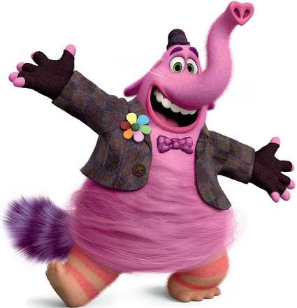

Nuestra Historia
Creé Dulcemente con el objetivo de poder transformar mis lagrimas de tristezas en gran alegrias para cualquier niño y persona que ame los dulces tanto como yo. Riley solía jugar conmigo en todo tipo de juegos cuando tenía 3 años. Sin embargo, se detuvo cuando ella tenía 4 años, y desde entonces, me quedé sin trabajo. Fue por eso que decidí dedicar todo mi amor en esta golosineria